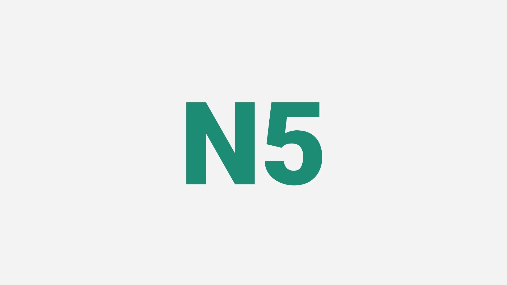

Significado :
A partícula へ (e) é um dos muitos marcadores de direção em japonês. Ele é usado para indicar movimento ou direção para um lugar ou destino específico. Pode ser entendido como "Rumo a ", "Em direção a"
東京へ行きます(とうきょうへいきます) Tradução: Vou rumo a Tokyo
Modo de usar :
SUBSTANTIVO へ COMPLEMENTO
Exemplo
① 彼女は日本へ 行きます。 Tradução: Ela vai para o japão Hiragana: かのじょはにほんへいきます Romaji: kanojo wa nihon e ikimasu
② 大学へ 行きます。 Tradução: Eu vou para a faculdade Hiragana: だいがくへいきます Romaji: daigaku e ikimasu
③ 図書館へ 行きましょう！ Tradução: Vamos para a biblioteca Hiragana: としょかんへいきましょう Romaji: toshokan e ikimashō
④ 美術館へ 行きました。 Tradução: Fui a um museu de arte Hiragana: びじゅつかんへいきました Romaji: bijutsukan e ikimashita
⑤ 彼は明日家へ 帰ります。 Tradução: Ele voltará para casa amanhã Hiragana: かれはあしたいえへかえります Romaji: kare wa ashita ie e kaerimasu
⑥ 図書館へ 本を買いに行きます。 Tradução: Vou à biblioteca comprar um livro Hiragana: としょかんへほんをかいにいきます Romaji: Toshokan e hon o kai ni ikimasu
⑦ 公園へ 遊びに行きました。 Tradução: Fui ao parque passear Hiragana: こうえんへあそびにいきました Romaji: kōen e asobi ni ikimashita